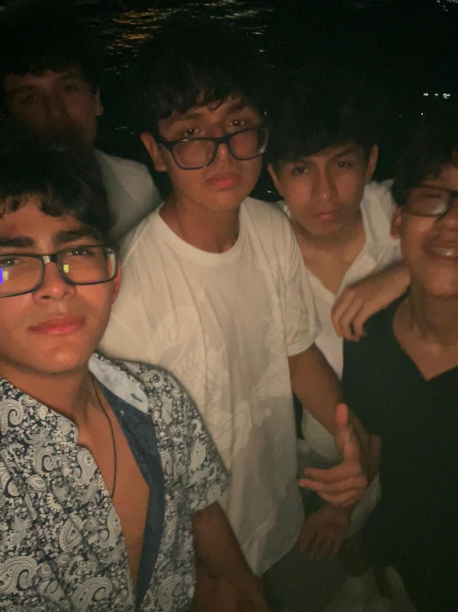
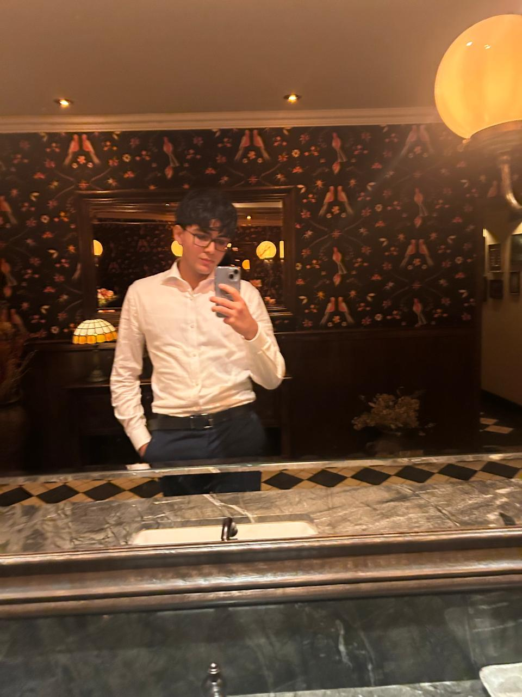

Tengo 15 años, estudio en el colegio San Ignacio de Recalde y este es mi blog CAS — el registro de todo lo que aprendo, siento y hago más allá del aula.
Para lograr servir a una población o a la resolución de un problema se tiene que conocer la situación y aprender cómo solucionarlo
Perfil Personal
Soy Joaquín González, tengo 15 años y soy alumno del Colegio San Ignacio de Recalde, estoy cursando el Programa del Diploma del IB. Si tuviera que describirme en pocas palabras, diría que soy alguien que reflexiona constantemente.
El fútbol es una parte importante de mi vida; no solo porque disfruto practicarlo, sino porque me ha enseñado cosas que en el colegio no se aprender: a considerar a cualquier grupo al que pertenezca y no solo a mi, que perder es parte de la vida, y que la disciplina no es un castigo sino una decisión. Académicamente, lo que más me apasiona es la física y las matemáticas; es la sensación de poder conocer cómo funciona el mundo, sus algorítmos y bases y encontrar la lógica detrás de todo.
Me considero una persona honesta, leal, justa y respetuosa. Trato de ser alguien quien inspire confianza, aunque sé que todavía tengo mucho por trabajar, principalmente mi paciencia.
En CAS quiero que mis acciones tengan sentido real, no solo obtener la nota. Me interesa apoyar a estudiantes académicamente en los cursos que domino, esto porque además de adquirir profundamente el conocimiento que tengo, lo puedo compartir. Al principio del año los profesores nos dijeron que nos sacarían de nuestra zona de confort, creí que esto sería aburrido e incómodo; sin embargo, tras el paso del tiempo, comprendo que esto me ayudará a desarrollarme de una forma integral, no solo considerando la parte académica, que es muy importante, sino también la conciencia social, política y económica.
Mis valores


Marco del programa
El Programa del Diploma del Bachillerato Internacional (IBDP) es un programa educativo de dos años, reconocido a nivel mundial, diseñado para jóvenes de entre 16 y 19 años. Su objetivo no es solo preparar académicamente a los estudiantes para la universidad, sino formarlos como ciudadanos globales, reflexivos, responsables y comprometidos con el mundo.
A diferencia de muchos sistemas educativos tradicionales, el IBDP exige que los estudiantes piensen críticamente, investiguen de forma independiente, conecten diferentes áreas del conocimiento y actúen con integridad ética.
El programa se compone de seis grupos de asignaturas más tres componentes del núcleo obligatorios: Teoría del Conocimiento (TdC), la Monografía y CAS. Sin completar los tres, no se obtiene el Diploma.
CAS es uno de los cursos troncales del IBDP. No tiene nota numérica, pero es obligatorio para obtener el Diploma. A través de CAS, los estudiantes participan en experiencias reales que los hacen crecer en aspectos que no son desarrollados académicamente.
Se desarrolla a lo largo de los 18 meses del programa y se divide en tres áreas:
Cada experiencia debe ir acompañada de una reflexión personal que demuestre aprendizaje real, no solo participación. Este blog comparte eso.
Período CAS 2026–2027
Selecciona un mes para ver la experiencia CAS correspondiente.
Selecciona una experiencia del menú para ver su contenido.